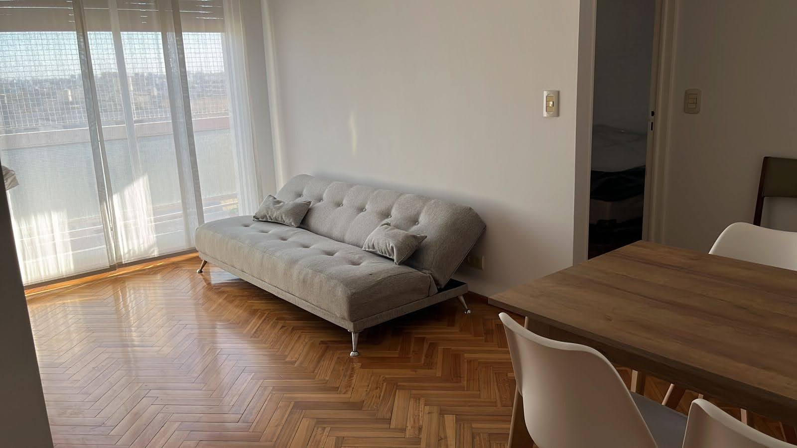
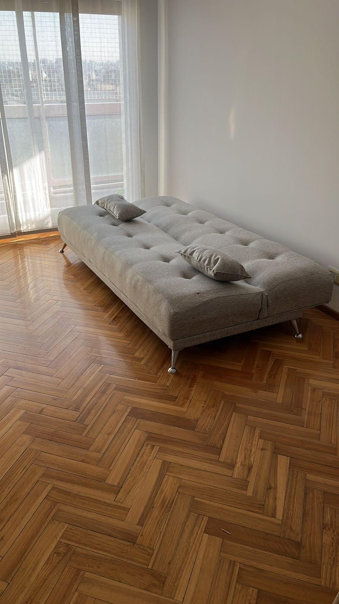
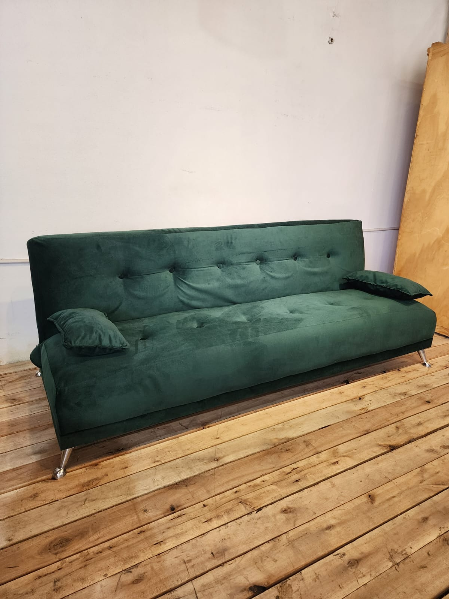
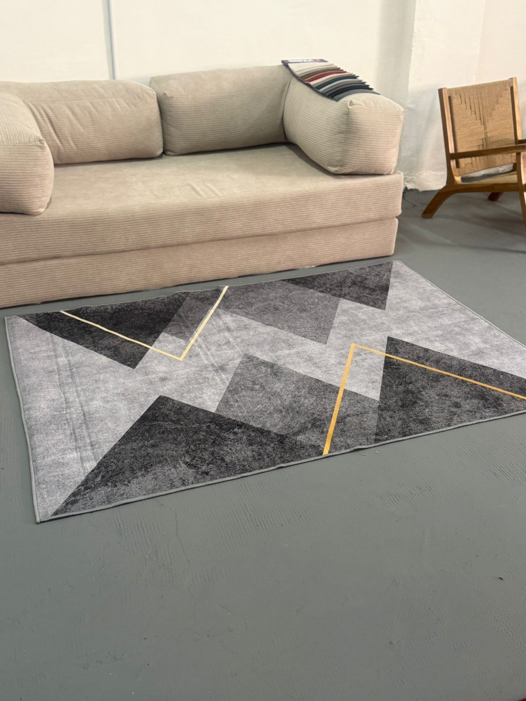
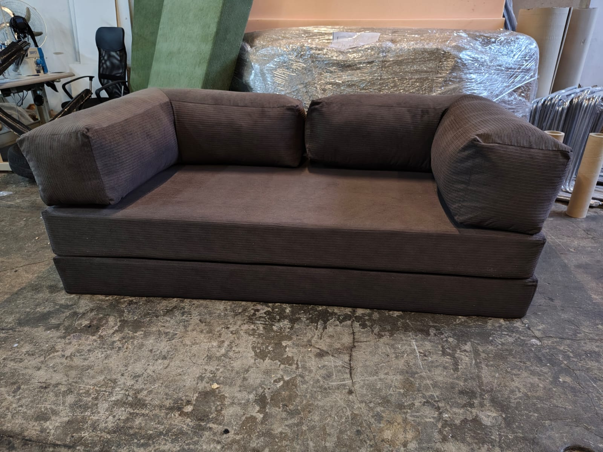
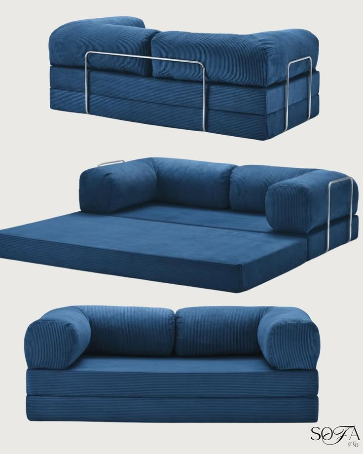

Diseño premium y confort directo a tu hogar

Diseño capitoné elegante con patas de metal reforzadas. Ideal para living y espacios modernos.
Consultar fábrica →
Mismo modelo Gris Premium en su posición totalmente desplegada. Práctico, rápido y súper cómodo.
Consultar fábrica →
Tapizado exclusivo en pana suave con almohadones laterales y patas de diseño cromadas.
Consultar fábrica →
Estructura al ras del suelo ultra confortable. Almohadones mullidos ideales para el relax diario.
Consultar fábrica →
Confeccionado en tela corderoy de alta resistencia en tono marrón oscuro. Comodidad absoluta.
Consultar fábrica →
Diseño inteligente de tres posiciones con soportes perimetrales de acero. Estilo y funcionalidad.
Consultar fábrica →